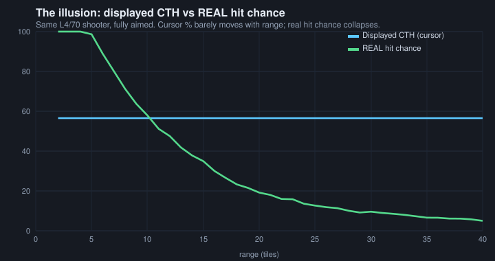
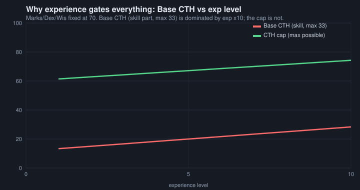
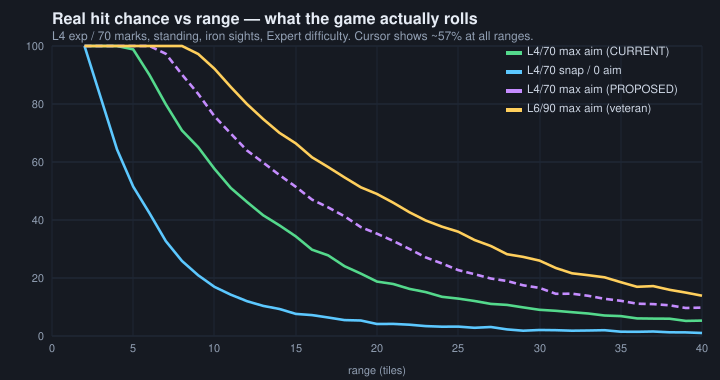

Jagged Alliance 2 v1.13 — Understanding & Tuning the New Chance‑To‑Hit (NCTH) System
*A source‑grounded analysis of the NCTH shooting model — designed and written by Headrock (see his own design document: "New Chance To Hit system — The Formula", The Bear's Pit) — why low‑level mercs "can't hit anything", and exactly which knobs to turn.*
Prepared from the actual mod source (source/Tactical/Weapons.cpp, source/Tactical/LOS.cpp, source/Ja2/GameSettings.cpp) and the live tuning files (gamedir/Data-1.13/CTHConstants.ini, Ja2_Options.INI, DifficultySettings.xml). Every formula below was read from the code, numerically reproduced, and cross‑checked by an adversarial review pass.
Companion files in this folder
index.html— an interactive calculator. Open it in any browser (no install). Move the sliders, watch the real hit‑chance curves move. This is the "let's tune it together" tool.chart1_realhit.svg,chart2_divergence.svg,chart3_base_vs_exp.svg— the static charts used below.
0. TL;DR
- The complaint is real and it is mostly a geometry problem, not a "bad stats" problem. A level‑4 / 70‑marksmanship merc with a standing assault rifle shows roughly "57%" on the cursor at all ranges, but the number the cursor shows is not the chance to hit. The real chance — validated by simulating the exact code — is about 57% at 10 tiles, 20% at 20 tiles, 9% at 30 tiles, and their *snap* (unaimed) shot is ~5–17% at any range. That is the "can't hit anything" experience.
- Two independent things gate low‑level mercs: (a) Base CTH is experience‑dominated — the formula multiplies experience by 10 *and* weights it ×3, so a low‑level merc's unaimed shot is worthless regardless of marksmanship; (b) the cursor % feeds a widening cone of fire, and the chance of a bullet landing on a man‑sized target falls off roughly as *1 / (range²)*, so aimed shots collapse with distance even though the displayed % barely moves.
- ⚠️ Your live game folder currently has
NCTH = FALSE(gamedir/Data-1.13/Ja2_Options.INI:1737) — i.e. it is set to run the old system (OCTH). Every tuning value inCTHConstants.inionly does anything whenNCTH = TRUE. Confirm which system you actually play before tuning (see §1). - Highest‑leverage, low‑risk fixes (details in §6–7): raise
IRON_SIGHT_PERFORMANCE_BONUS, lowerDEGREES_MAXIMUM_APERTUREa little, lowerIRON_SIGHTS_MAX_APERTURE_MODIFIERtoward 2.0, rebalanceBASE_EXPdown /BASE_MARKSup, and lowerMAX_BULLET_DEV. **Do *not* lowerNORMAL_SHOOTING_DISTANCE** — it is a false lever for iron sights and actively hurts (§6).
1. ⚠️ First things first: OCTH vs NCTH (don't tune the wrong system)
JA2 1.13 ships two completely different chance‑to‑hit systems, chosen by one switch:
Ja2_Options.INI → [Tactical Gameplay Settings] → NCTH = TRUE|FALSERead into gGameExternalOptions.fUseNCTH; UsingNewCTHSystem() returns it (GameSettings.cpp:122). In your current Data-1.13 folder it is FALSE. If that is really how you play, none of the CTHConstants.ini values are in effect and the tuning below won't change anything until you set it to TRUE.
| OCTH (old / classic) | NCTH (new / HEADROCK "HAM4") | |
|---|---|---|
| What the % means | A literal probability. The engine rolls PreRandom(100); hit if roll < CTH (Weapons.cpp:3473). |
Only an estimate of how well the muzzle points. There is *no* roll‑under. |
| How a miss happens | On a roll‑*over* the bullet is deflected; amount scales with sHitBy (how badly you missed). A *hit* goes dead‑centre. |
Every shot is a random draw inside a "cone of fire". Whether it lands on the target is pure geometry. |
| Tuned by | The big additive +/- modifier list inside CalcChanceToHitGun and the [CTH] INI options. |
CTHConstants.ini (aperture, base/aim weights, recoil) + a few Ja2_Options keys. |
CTHConstants.ini used? |
Mostly ignored. Aperture, scope‑effectiveness, iron‑sight bonus, base/aim weights = NCTH‑only. | Yes — this is *the* NCTH tuning file. |
Takeaway: everything in this report is about NCTH. The two systems share almost no tuning surface, so a value that matters under NCTH (e.g. DEGREES_MAXIMUM_APERTURE) does nothing under OCTH, and vice‑versa. This is the trap to avoid.
2. How NCTH actually works (the whole pipeline)
NCTH replaces "roll a die against a %" with "simulate where the muzzle is pointing and fly the bullet there". The displayed % is just an input to that simulation.
┌─────────────────────────────────────────────┐
skills, gun, │ CalcNewChanceToHitGun() (Weapons.cpp:6258) │
stance, aim clicks ─▶│ = the DISPLAYED cursor % │
│ BASE CTH ──(aim clicks)──▶ toward CAP │
└───────────────┬─────────────────────────────┘
│ displayed CTH (0..99)
▼
uiMuzzleSway = 100 − displayed CTH (Weapons.cpp:2498)
│ (low CTH ⇒ big sway)
▼
┌───────────────────────────────────────────────────────────────────┐
│ AdjustTargetCenterPoint() (LOS.cpp:8527) │
│ build a CONE of fire whose radius grows with range & sway: │
│ basicAperture = sin(DEGREES_MAXIMUM_APERTURE) × NORMAL_DISTANCE │
│ aperture = basicAperture × range/NORMAL ÷ scopeMag × sway/100│
│ then pick a RANDOM point inside that disk (CalcMuzzleSway, 9464): │
│ r = sqrt(rand) ← uniform over the disk AREA │
│ + a second, gun‑only "bullet deviation" (CalcBulletDeviation, 9541) │
│ + per‑bullet RECOIL for burst/auto shots #2+ (CalcRecoilOffset) │
└───────────────────────────────┬───────────────────────────────────┘
▼
Bullet flies to (target centre + offset). Hit = it lands on the body.2a. The displayed % is two halves: Base and Cap
Base CTH — how well the muzzle points with *no* extra aiming (skills only, then dragged down by gun handling/conditions). Experience‑dominated. Capped low (max ≈ 33).
BaseCTH = (BASE_EXP·exp·10 + BASE_MARKS·marks + BASE_DEX·dex + BASE_WIS·wis)
──────────────────────────────────────────────────────────────── ÷ 3
(BASE_EXP + BASE_MARKS + BASE_DEX + BASE_WIS)With the live values (3,1,1,1) this is (30·exp + marks + dex + wis) / 18 (Weapons.cpp:11427‑11438). If effective marks or dex is 0 it returns the minimum CTH ("never hit").
CTH Cap — the absolute ceiling aiming can ever reach. Marks/Dex‑dominated, not divided by 3, so it can reach ~99.
Cap = (AIM_EXP·exp·10 + AIM_MARKS·marks + AIM_DEX·dex + AIM_WIS·wis)
─────────────────────────────────────────────────────────────
(AIM_EXP + AIM_MARKS + AIM_DEX + AIM_WIS)With the live values (1,3,2,1) this is (10·exp + 3·marks + 2·dex + wis) / 7 (Weapons.cpp:11787‑11795).
Aiming moves the result from Base toward Cap along a *diminishing* curve. With N allowed aim clicks, click *i* adds (N−i+1)/[N(N+1)/2] of the span — the first click gives the most, the last click the least, and spending all clicks reaches the cap (Weapons.cpp:6579‑6600). Both Base and Cap are then dragged down by a modifier stack (gun handling, stance, injury, morale, fatigue, suppression shock, visibility, difficulty…). All of it clamps to [MINIMUM_POSSIBLE_CTH, MAXIMUM_POSSIBLE_CTH] = [0, 99] in your config.
2b. The cursor % becomes a cone of fire
The single most important line in the whole system:
uiMuzzleSway = 100 − CalcChanceToHitGun(...) // Weapons.cpp:2498That sway scales the radius of the aperture the muzzle may wander in:
basicAperture = sin(15°) × 70 = 18.1 units (LOS.cpp:9117) ← one tile = 10 units
× (iron‑sight gradient & −20% iron bonus) (LOS.cpp:8624‑8633)
distanceAperture = basicAperture × range / 70 (LOS.cpp:8683) ← grows with range
maxAperture = distanceAperture / effectiveScopeMag (LOS.cpp:8697) ← scope shrinks it
aperture = maxAperture × uiMuzzleSway / 100 (LOS.cpp:8703) ← THE payoffThen a random point is drawn uniformly over the disk's area (r = sqrt(rand), LOS.cpp:9482) and the bullet flies there. VERTICAL_BIAS squashes the disk vertically when prone/crouched (so fewer high/low misses); standing is a full circle.
Two more scatter layers pile on top, and neither is reflected in the cursor %:
- Bullet deviation (
CalcBulletDeviation,LOS.cpp:9541):MAX_BULLET_DEV × (100 − gunAccuracy)/100, and withRANGE_EFFECTS_DEV = TRUEit grows with range. This scatters even a "99%" shot, worse for low‑accuracy guns. - Recoil (
CalcRecoilOffset,LOS.cpp:10188): only affects bullets #2+ of a burst/auto — the *first* bullet is never recoil‑displaced. Countered by STR/AGI/EXP/Auto‑Weapons skill.
3. Why the cursor lies: displayed % vs the real hit chance
Because the muzzle point is drawn uniformly over a disk, the chance it lands on a (roughly fixed‑size) target scales with area — i.e. roughly (target size / aperture radius)². The aperture radius grows linearly with range, so the real hit chance falls off like 1 / range². But the displayed % has no range term for a plainly‑visible target — so the cursor stays almost flat while the true chance collapses.

*Same L4/70 shooter, fully aimed. The cursor reads a nearly constant ~57%; the real hit chance falls from ~57% at 10 tiles to ~9% at 30.*
Two consequences that explain a lot of the "feel":
- In the mid‑range, the cursor over‑states your odds (it says 57%, you land ~20% at 20 tiles).
- Near the top, the cursor under‑states them. Once the aperture shrinks below the target's size, *every* shot hits — so a "70%" that's over that threshold is effectively 100%. This is why the last few points of CTH feel disproportionately powerful, and why veterans with scopes suddenly "never miss".
Note: INACCURATE_CTH_READOUT = TRUE in your config *deliberately* makes the on‑screen feedback fuzzier for untrained shooters, which compounds the perception that low‑level mercs are unpredictable.
4. Root cause of "up to L4 exp / 70 marks, can't hit anything"
It is three stacked mechanics, and — importantly — **marksmanship is *not* the binding constraint**:
(1) Base CTH is experience‑gated by construction. The exp·10 term with weight ×3 makes experience worth ~30× a raw marksmanship point in the base. One experience level ≈ +1.7 base CTH; one marksmanship point ≈ +0.06. Even maxing marks+dex+wis to 100 with experience stuck at 4 only lifts the base skill part from 18.3 to 23.3 (out of the /3 ceiling of 33). **Snap/unaimed shots are therefore ~10% for this merc at *any* range.**

*Base CTH (red) is dominated by experience; the cap (green) is not. Marksmanship 70 buys you a decent ceiling but a poor floor.*
(2) Gun handling then halves the base and clips the aim span. For a standing assault rifle (handling ≈ 11): base is multiplied by 1 − (11 × BASE_STANDING_STANCE 2.0 × BASE_DRAW_COST 2.0)/100 = 1 − 44% ⇒ base ≈ 10. The parallel aim penalty (AIM_DRAW_COST 1.0 × AIM_STANDING_STANCE 1.5 × 11 = −16.5%) shrinks the *reachable span*, so max‑aim displayed CTH tops out around 56–57%, below the marksmanship cap of ~66 — which is why raising AIM_MARKS or MAXIMUM_POSSIBLE_CTH barely helps *this* merc: he can't reach the cap anyway.
(3) That modest 56% cursor keeps the cone wide, and geometry does the rest. sway = 100 − 57 = 43 ⇒ a fairly large aperture that grows with range. Result (simulated from the real RNG, standing, iron sights, whole‑body target, Expert difficulty):
| Range | Base CTH | Displayed CTH (max aim) | Real hit — snap | Real hit — max aim |
|---|---|---|---|---|
| 5 t | 10% | 57% | 52% | 99% |
| 10 t | 10% | 57% | 17% | 57% |
| 15 t | 10% | 57% | 8% | 34% |
| 20 t | 10% | 57% | 5% | 20% |
| 25 t | 10% | 57% | 3% | 13% |
| 30 t | 10% | 57% | 2% | 9% |

For calibration, a veteran (exp 6 / marks 90, standing iron sights) reaches a ~74% cursor and really lands ~92% at 10 tiles, ~49% at 20, ~24% at 30 — much better, but note even the veteran's iron‑sight shots decay at range (that's what scopes are for), and **his *snap* shot at 20 t is also ~5% because base CTH barely differs. Snap shots are meant to be bad for everyone; the low‑level pain is specifically that aimed** shots also fall apart past ~12–15 tiles.
5. What this means for the design intent
NCTH is internally consistent and, honestly, quite elegant — it models "an unskilled shooter waves the muzzle around a wide cone; skill + aiming + optics + a steady stance shrink that cone." The frustration is that the defaults are tuned for a squad that has scopes and mid/high experience. A fresh militia‑grade merc with iron sights sits near the widest part of every curve, and because hit‑chance is quadratic in cone size, "a bit below average" *feels* like "hopeless". The knobs below let you flatten that early‑game cliff without turning your veterans or the enemy into aimbots.
6. The tuning levers (ranked, with direction and side‑effects)
All values below are NCTH‑only unless noted, live in CTHConstants.ini, and were confirmed against GameSettings.cpp. "Raise/Lower" = the direction that helps the shooter.
Tier 1 — biggest effect on the low‑level problem
| Parameter | Now | Suggested | Direction / effect | Watch‑outs |
|---|---|---|---|---|
IRON_SIGHT_PERFORMANCE_BONUS |
20 | 30–40 | Raise. Directly shrinks the iron‑sight cone (aperture × (100−bonus)/100, LOS.cpp:8633). At 40 the cone is 25% tighter than now ⇒ real hit ≈ ×1.8 in the falloff zone. |
Iron‑sight only, so it targets exactly the low‑level loadout and *doesn't* buff scoped snipers. Cumulative with laser bonuses. |
DEGREES_MAXIMUM_APERTURE |
15 | 11–13 | Lower. The master cone knob: basicAperture = sin(angle)×NORMAL. Tightens *every* shot. Absolute gain is largest for wide‑cone (low‑skill) shooters. |
Global — buffs enemies and veterans equally, and it does not change the displayed %, so the cursor won't reflect it. Go gently. |
IRON_SIGHTS_MAX_APERTURE_MODIFIER |
3.0 | 2.25–2.5 | Lower (keep ..._USE_GRADIENT = TRUE). Makes iron sights hold accuracy at range; 2.0 ≈ as good as a 2× scope. |
Helps iron‑sight users at distance specifically; little effect up close. |
BASE_EXP / BASE_MARKS |
3 / 1 | 2 / 1.5 | Shift base weighting off raw experience onto trainable marksmanship. Raises base CTH (⇒ tighter snap cone, higher floor) for mercs whose marks > 10×exp — exactly your recruits. | Population‑selective and self‑balancing: barely moves elite enemies (high exp *and* marks); *lowers* base for veteran‑but‑low‑marks mercs. Keep BASE_EXP + others sane. |
MAX_BULLET_DEV |
5 | 3–4 | Lower. Shrinks the gun‑accuracy scatter layer that sits on top of the cone and is worst for low‑accuracy guns/long range. Invisible on the cursor. | Global; also tightens enemy fire. RANGE_EFFECTS_DEV = FALSE would remove range‑scaling of this layer entirely. |
Tier 2 — helpful, more situational
| Parameter | Now | Idea | Effect |
|---|---|---|---|
AIM_DEX |
2 | 2.5–3 | Raises the cap using dexterity, which many recruits have — lets a well‑trained low‑exp merc reach a higher aimed ceiling. |
BASE_DRAW_COST / AIM_DRAW_COST |
2 / 1 | 1.5 / 0.75 | Softens the heavy handling penalty that halves base CTH (§4‑2). Helps everyone with cumbersome guns; be careful, it also lifts snap fire generally. |
BASE_STANDING_STANCE / AIM_STANDING_STANCE |
2 / 1.5 | 1.75 / 1.25 | Same idea, standing‑specific (recruits often can't afford to go prone). |
SCOPE_EFFECTIVENESS_MINIMUM |
50 | 60–70 | If you hand recruits optics, guarantees more of the scope's power regardless of skill (low‑skill only; experts already near cap). |
LIMIT_GROUND_SHOTS |
FALSE | TRUE | Cuts the demoralising "shot the dirt 2 feet away" first‑bullet misses (overrides VERTICAL_BIAS). |
MOVEMENT_TRACKING_DIFFICULTY |
40 | 25–30 | Makes moving targets less punishing for unskilled shooters. |
Tier 3 — asymmetric knobs (help the player *without* buffing the enemy)
These live in gamedir/Data-1.13/TableData/DifficultySettings.xml, are applied per difficulty, and — for the player only — fade out by 30% campaign progress (Weapons.cpp:11658, 11982):
player bonus = max(0, 30 − campaignProgress%) × CthConstants…DifficultyPlayer / 30Current per‑difficulty values (Base and Aim, Player / Enemy):
| Difficulty | Player Base+Aim | Enemy Base+Aim |
|---|---|---|
| Novice | +20 (fades to 0 by 30%) | −30 |
| Experienced | +10 | 0 |
| Expert | 0 | +20 |
| Insane | 0 | +50 |
This is huge for your complaint. If you play Expert or Insane, your low‑level mercs get zero help while enemies get +20/+50 aim — the asymmetry alone can make early fights feel hopeless. To help the *player* specifically, raise CthConstantsBaseDifficultyPlayer / CthConstantsAimDifficultyPlayer for your difficulty (e.g. give Expert +10/+15), and/or trim the enemy values. Because it fades by 30% progress, it's an early‑game crutch that disappears once your squad matures — arguably the cleanest fix of all.
The one lever *not* to touch
NORMAL_SHOOTING_DISTANCE (70). The INI comment says "decrease to make all shots more accurate", but for iron sights that is wrong: it appears in basicAperture = sin(angle)×NORMAL *and* in distanceAperture = basicAperture × range/NORMAL, so it cancels out of the un‑scoped cone entirely (LOS.cpp:9120 vs 8683). Worse, it multiplies the separate bullet‑deviation term (iBulletDev × range/NORMAL), so **lowering it *increases* scatter for everyone. Its only real job is setting where scopes** reach full magnification. Leave it at 70 (or *raise* it slightly if you want less long‑range bullet deviation, at the cost of scopes maturing later).
7. Concrete starting recipes (for tuning together)
Predicted real hit‑chance for the L4 / 70‑marks test merc (standing, iron sights, whole‑body target, Expert), from the simulation. Load these on the Proposed side of index.html and compare live.
Recipe A — "Iron‑sight buff" (surgical, low collateral). Helps recruits, minimal enemy/veteran impact.
IRON_SIGHT_PERFORMANCE_BONUS = 35 ; was 20
IRON_SIGHTS_MAX_APERTURE_MODIFIER = 2.5 ; was 3.0
BASE_EXP = 2.0 ; was 3.0
BASE_MARKS = 1.5 ; was 1.0
BASE_DRAW_COST = 1.5 ; was 2.0→ 10 t: 57% → ~76% · 20 t: 20% → ~35% · 30 t: 9% → ~16%. Snap shots roughly unchanged (still meant to be weak).
Recipe B — "Tighter cone" (global, punchier, also buffs enemies).
DEGREES_MAXIMUM_APERTURE = 11 ; was 15
IRON_SIGHT_PERFORMANCE_BONUS = 30 ; was 20
MAX_BULLET_DEV = 3.5 ; was 5.0→ a stronger across‑the‑board tightening; combat gets faster and more lethal for both sides. Good if you feel *all* firefights are too swingy, not just the player's recruits.
Recipe C — "Early‑game crutch" (player‑only, self‑removing). Edit DifficultySettings.xml for your difficulty:
CthConstantsBaseDifficultyPlayer = 15
CthConstantsAimDifficultyPlayer = 15→ +15% base and aim while campaign progress < 30%, fading to 0. Doesn't touch enemies, veterans, or late game at all.
Recipe D — "OCTH‑like feel" (make the cursor honest). The old system's promise was simple: the displayed % *is* the hit chance. This 3‑line change tunes NCTH so the cursor ≈ the real hit chance at typical 12–18 tile engagements (optimized numerically against the model for a recruit and a veteran), while staying fully NCTH — cone of fire, optics, stances all intact. Closer than that the real chance runs *above* the cursor (as OCTH felt generous up close), beyond ~20 tiles it still decays.
IRON_SIGHT_PERFORMANCE_BONUS = 30 ; was 20
IRON_SIGHTS_MAX_APERTURE_MODIFIER = 2.0 ; was 3.0 (iron sights ≈ a 2x scope at range)
BASE_EXP = 2.0 ; was 3.0→ L4/70 at 12t: cursor 57% / real 67% (vanilla real 46%) · at 16t: 57% / 50% · veteran L6/85 at 16t: cursor 70% / real 74% (vanilla 53%). Snap shots stay weak (~32% at 10t). Also loadable as the "OCTH‑like feel" preset in the Tuning Lab.
Recommended combination to start: Recipe A + Recipe C (or Recipe D alone if your main complaint is the lying cursor). A tightens the low‑level cone through skill/equipment terms; C cushions the very early game without permanently trivialising anything. Then sit with the Tuning Lab and dial IRON_SIGHT_PERFORMANCE_BONUS / DEGREES_MAXIMUM_APERTURE to taste.
8. Using the interactive Tuning Lab
Open index.html. Set the shooter to your problem case (exp 4, marks 70…), pick stance/sight/difficulty, then edit the CTHConstants sliders — they drive the purple "Proposed" curves so you can compare against the green/blue "Current". It reproduces the real code: displayed CTH → muzzleSway = 100 − CTH → aperture geometry → a sqrt(uniform) Monte‑Carlo of the muzzle point vs the target silhouette. The bottom‑left panel draws the actual aperture disk and 250 sample shots so you can *see* the cone shrink as you tune. The presets ("Low‑level buff", "Tighter cone") load the recipes above.
9. Model fidelity & caveats (so you can trust — and correct — the numbers)
- The engine has no
roll < CTHstep under NCTH; the "real hit %" here is a Monte‑Carlo of the exact muzzle‑sway draw (CalcMuzzleSway,LOS.cpp:9464) against a target silhouette. It is faithful to the dominant mechanic. - Deliberate simplifications (audited against source): (a) the *displayed* CTH model omits some second‑order visibility penalties — note
AIM_VISIBILITYis only −1, so for a clearly‑visible target the flat cursor really is faithful; (b) the second bullet‑deviation scatter layer is an optional toggle on the Accuracy tab, faithful toCalcBulletDeviationincluding the source's *integer‑division* range ratio (gun scatter steps up at 2×/3× effective range rather than growing smoothly); (c) burst recoil on the Recoil & Autofire tab uses the exactCalcCounterForceAccuracy/CalcCounterForceMaxformulas (stance + attachment bonuses pooled as percentage points, applied once, perGetObjectModifier), while the per‑bullet counter‑force‑change loop and pre‑recoil anticipation are approximated and labeled as such. Traits (Sniper/Ranger scope‑range bonuses) and attachment ready‑time AP reductions are not modeled. - The target silhouette size (half‑width/half‑height in units) is an estimate — it's a slider in the Lab. If your in‑game experience says hits are rarer/commoner than the tool shows, nudge the target size to calibrate, then trust the *relative* movement of the curves when you tune.
- Everything else — base/cap formulas, the
100 − CTHhandoff, the aperture chain, the handling penalties, the difficulty asymmetry — is taken directly from source and reproduced exactly.
Appendix — key source references
| Mechanic | Location |
|---|---|
System switch NCTH → UsingNewCTHSystem() |
GameSettings.cpp:122, :1576 |
| Displayed CTH master | CalcNewChanceToHitGun — Weapons.cpp:6258‑6611 |
| Base attribute formula | Weapons.cpp:11414‑11438 |
| Cap attribute formula | Weapons.cpp:11779‑11795 |
| Aim‑click diminishing curve | Weapons.cpp:6579‑6600 |
| Difficulty asymmetry (player fade) | Weapons.cpp:11648‑11660, :11968‑11984 |
| CTH → muzzle sway handoff | Weapons.cpp:2498 |
| Aperture / cone construction | AdjustTargetCenterPoint — LOS.cpp:8527‑8988 |
| Basic aperture | CalcBasicAperture — LOS.cpp:9102‑9124 |
Random muzzle draw (sqrt(uniform)) |
CalcMuzzleSway — LOS.cpp:9464‑9539 |
| Scope magnification vs skill | CalcMagFactor / CalcEffectiveMagFactor — LOS.cpp:9028‑9098 |
| Gun bullet deviation | CalcBulletDeviation — LOS.cpp:9541 |
| Recoil (bullets #2+) | CalcRecoilOffset — LOS.cpp:10188 |
| Global CTH clamp defaults | GameSettings.cpp:1608‑1610 (max 99 / min 0) |
| All tuning constants + defaults | GameSettings.cpp:3673‑3813, CTHConstants.ini |
*This report and the Tuning Lab were produced by reading the mod source directly and validating every figure by simulation; a separate adversarial review pass confirmed the formulas and corrected three points (the NORMAL_SHOOTING_DISTANCE non‑lever, the "one CTH value feeding geometry" framing, and the population‑selective nature of the BASE_EXP/BASE_MARKS rebalance).*